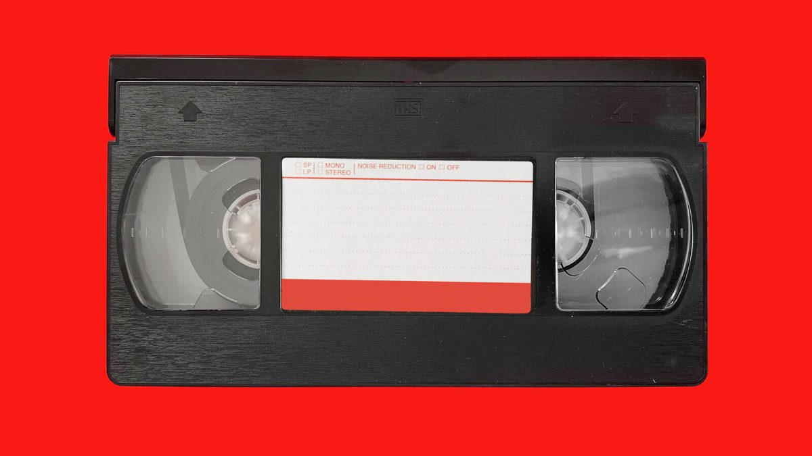
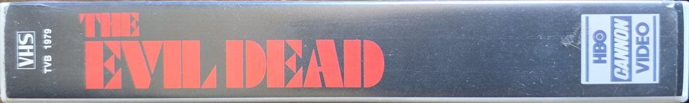
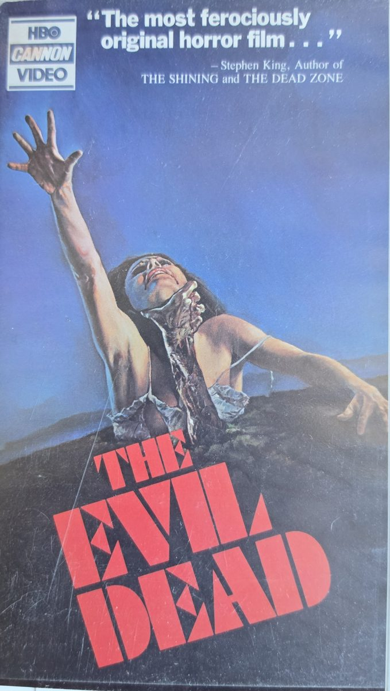
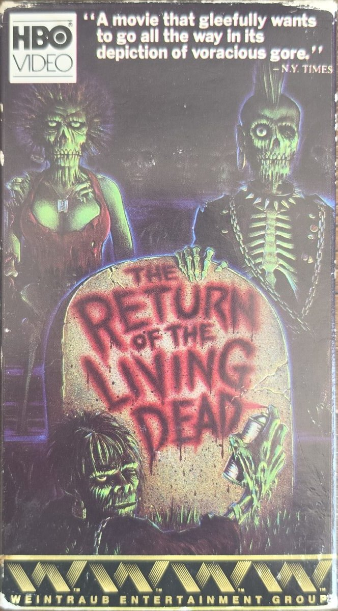

A hobby page
Be Kind, Rewind
Hunting down, preserving, and watching cult horror on VHS.
See the Shelf
The Hobby
My favorite hobby is collecting physical media, especially horror and cult films on VHS. Most of my tapes come from thrift stores, flea markets, estate sales, and online auctions. Every find is different: some are common rental copies, while others are early releases with unique cover art that was later replaced.
Why I Enjoy It
- The hunt. You never know what is sitting in the next bargain bin.
- The artwork. Hand-painted covers from the '80s are art in their own right.
- The history. Each release tells a story about the studio and era behind it.
- Ownership. Streaming titles disappear. A tape on the shelf stays put.

From the Shelf
Hover over a tape to read the details.

The Evil Dead (1981)
HBO/Cannon Video release from 1987. A Sam Raimi classic with a quote from Stephen King on the front.

The Return of the Living Dead (1985)
HBO Video release. Punk rock, zombies, and some of the best horror comedy of the decade.